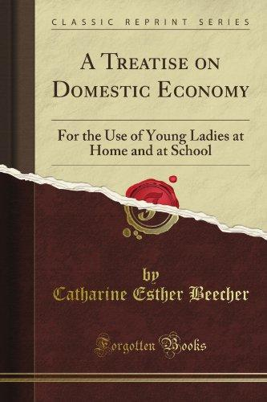1841 Catherine Beecher writes Treatise on Domestic Economy
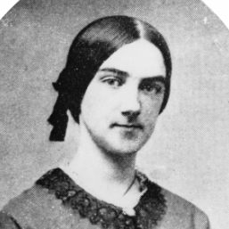1842 Ellen Swallow Richards born
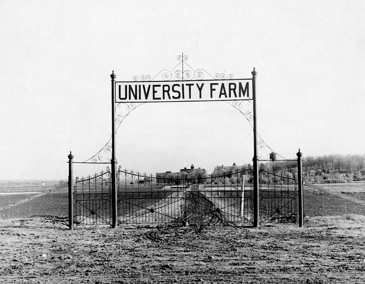1862 Morrill Act sets up land grant universities
 1868 Ellen is accepted into Vassar College. 1870 accepted into MIT
1868 Ellen is accepted into Vassar College. 1870 accepted into MIT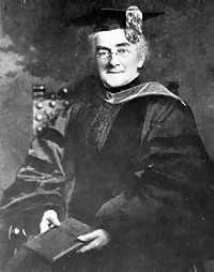1873 Ellen graduates from MIT
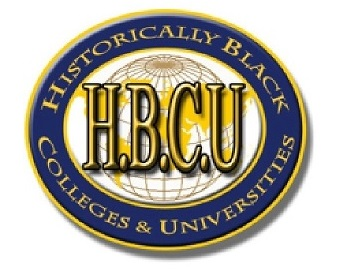1890 HBCU gives more opportunity to minorities
1894 Ellen Richards starts a lunch program in Boston
1899 Ellen Richards leads a group for the first time to collaborate and explore advances in home economics in the Lake Placid Conferences
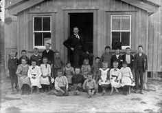1901 Education beyond 8th grade is a reality
1901 Vocation education now included in secondary education
1909 1st Girl's Tomato Club is organized by Marie Cromer
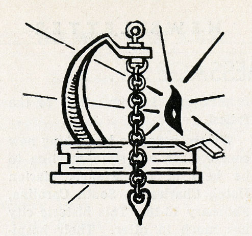1909 American Home Economics Association is established
1911 Ellen Richards dies
1912 South Carolina gets home demonstration agents
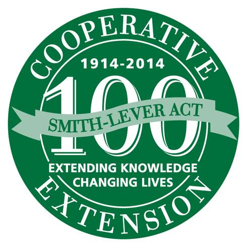1914 Smith-Lever Act Cooperative Extension Service requires land grant universities provide to rural towns agricultural and home economics
1917 Smith-Hughes Act sets vocational training separate from high school. Creates CTE: career technical education
1917-1919 WWI impacts fresh fruits and vegetables. Home Economists assist the public with training
1918 Home economics instruction for boys and girls goals are set with the AHEA
1920 Home Economics added to Land-Grant Colleges. Parenting classes encouraged for both men and women
1921 Women's Suffrage
 1925 Childcare is a key element to home economics
1925 Childcare is a key element to home economics1926 Home economists create nutritional recipes for corporations to be taught to school home economist teachers
1931 The public sees home economists as experts in human nutrition
1936 George Deen Act provides federal aid for vocational training
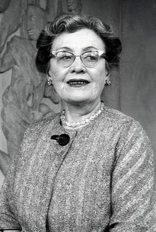1941 President Roosevelt's First Nutrition Congress addes Agnes Faye Morgan
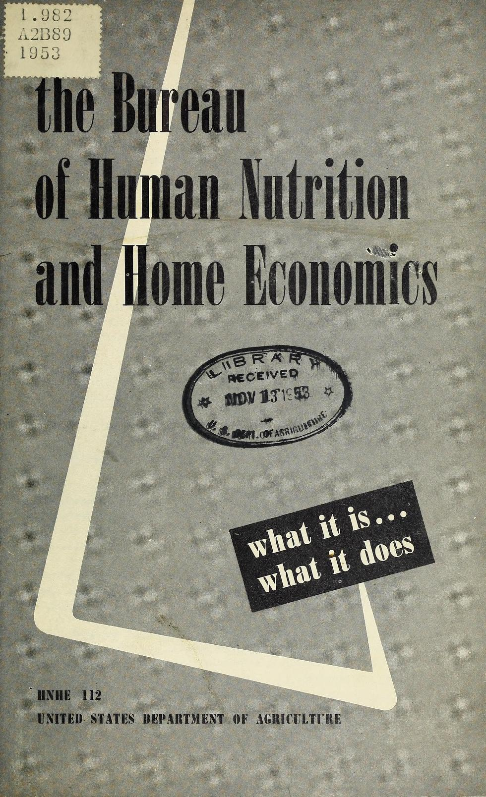1943 Bureau of Human Nutrition and Home Economics is the new name of the former USDA Bureau of Home Economics
1960's Femenists see Home Economics as restrictive. Racial integration takes place and specialized programs are more available
1961 Home Economics accredidation in undergraduate programs begins
1962 Florence Low wants to eliminate racial tensions within AHEA
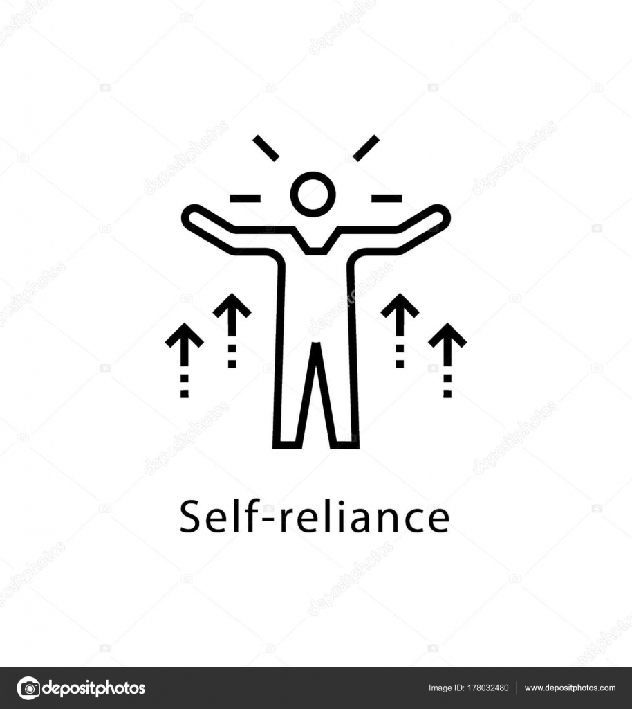1963 Helping people become self-reliant outside the home, Vocational Education Act is passed into law
1968 Handicapped and disadvantaged people are now included in the Vocational Education Act
1973 Lake Placid Conference held. This 11th meeting is focused on aligning members
1976 Males become focus of Home Economists with the Vocational Ed Act
1989 Project 2000 is launched to address diversity in the AHEA
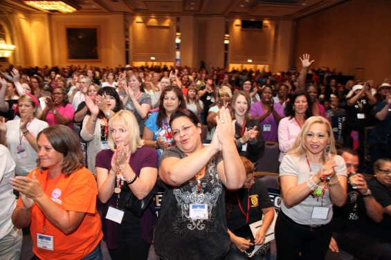1991 "Rethinking Women & Home Economics in the 20th Century" conference held
1993 Scottsdale AZ meeting recommends removing Home Economics from association name
1994 Name of the AHEA was changed to the American Association of Family and Consumer Science (AAFCS)
1998 FCS membership and public school programs see decline in participation
2008-2009 Centennial celebration of AAFCS held nationally
 2019 Adam Frank takes FCS101 with Sis Beckstead, changes his perspective
2019 Adam Frank takes FCS101 with Sis Beckstead, changes his perspective